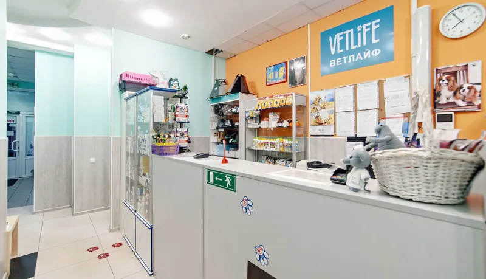
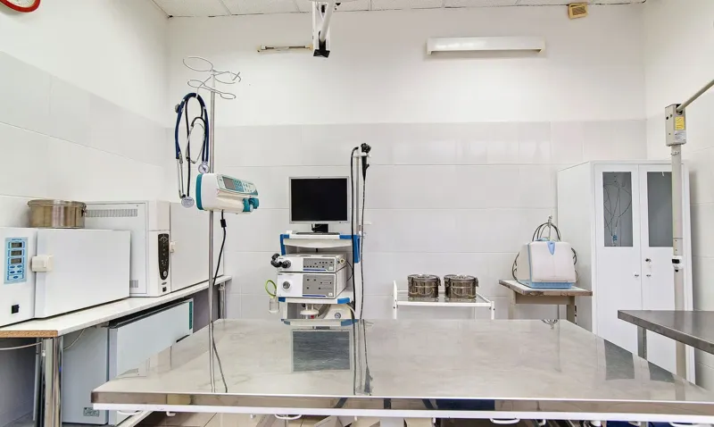

Ветеринарная клиника · Москва
Ветлайф. Мы рядом днём и ночью
Круглосуточный приём, диагностика, хирургия и стационар у МЦК «Окружная».
24/7приём без выходных
20+направлений лечения и диагностики
2стационара: лечебный и инфекционный
5%скидка пенсионерам, студентам и инвалидам


Клиника, где есть всё нужное
«Ветлайф» — частная ветеринарная клиника с круглосуточным режимом работы. Своя диагностика и лаборатория, хирургическое отделение, лечебный и инфекционный стационар, реанимация, ветаптека и зоомагазин.
ТерапияВакцинацияЧипированиеХирургияСтерилизация и кастрацияТравматологияУЗИ и рентгенЭхоКГ
Круглосуточно
Принимаем 24 часа в сутки без выходных. Двойного ночного тарифа на услуги врачей нет.
Инфекционный стационар
Отдельный стационар для животных с инфекциями — круглосуточно, плюс лечебный стационар и реанимация.
Своя диагностика
УЗИ, рентген, ЭхоКГ и лаборатория: анализы крови, мочи и кала — в клинике.
Запишитесь — мы на связи круглосуточно
Москва, Бескудниковский бульвар, 12, стр. 1 · МЦК «Окружная»